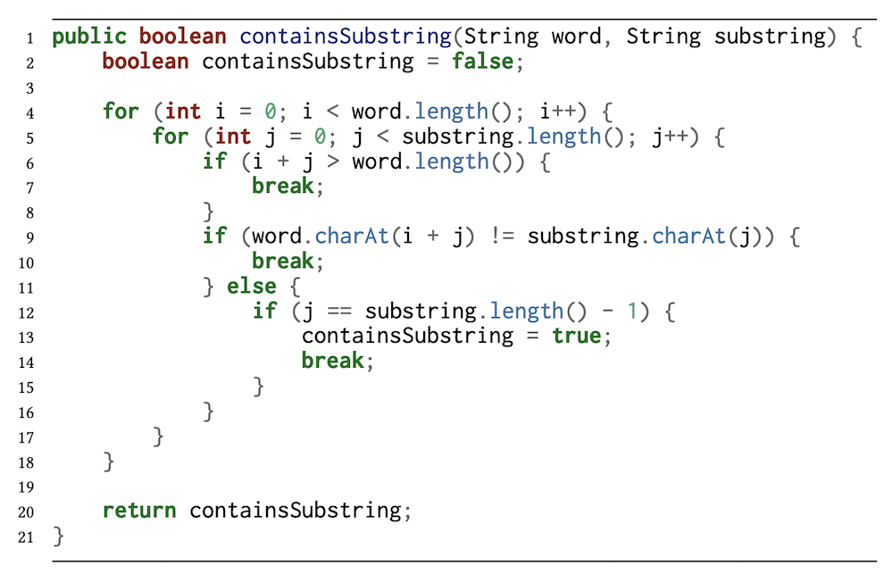
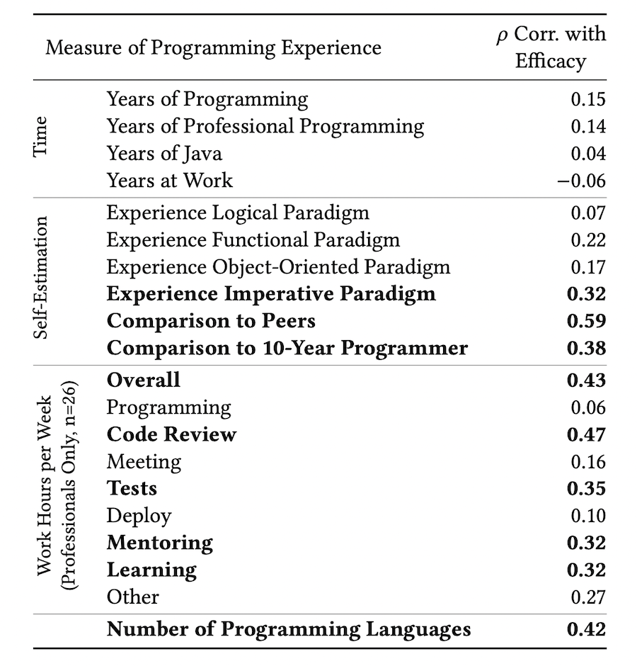

I work on AI + dev tools.
See the discussion of this post on Hacker News and discussion of the paper on Reddit.
There is an assumption that more experience is better.
Programmers with more gray hair generally get paid more, have prestigious titles, and people value their opinions more.
But is there truth to it?
The FizzBuzz test was created specifically to weed out programmers who can't program, even at senior levels.
"Want to know something scary? The majority of comp sci graduates can't. I've also seen self-proclaimed senior programmers take more than 10-15 minutes to write a solution." —Imran Ghory
A study was recently published that tries to shed light on this topic: Correlates of Programmer Efficacy and Their Link to Experience: A Combined EEG and Eye-Tracking Study.
They conducted a lab study where 37 programmers were instructed to comprehend code solutions to Leetcode-like problems and then asked the output given a specific input. The programmers did so while wearing an EEG cap and in front of an eye tracker.
An example code snippet from the study:
The big question: Did the programmers with more experience perform better?
No, not really.
In fact, even the amount of time spent programming at work did not correlate with performance!
There were some self-reported characteristics that did correlate with performance though.
One's own comparison to their peers was the best predictor of performance. Other notable correlations included time spent doing code reviews, mentoring, learning, and writing tests, as did the number of programming languages known.
The study also confirmed that good programmers read code quite differently. They fixate on specific types of tokens while skipping over much of the code, unlike novice programmers who read code sequentially.
What can we takeaway from this?
Maybe programmers get comfortable after a few years on the job and stop doing deliberate practice to get better. Maybe Leetcode-style problems don't correlate with actual job performance. Maybe programmers get promoted into more management tasks so their programming skills stagnate.
Or maybe...
"Experience is cheap, all it takes is time" —Random person on the internet